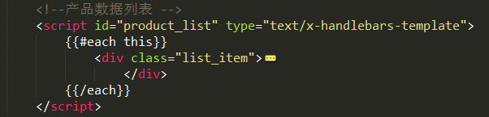
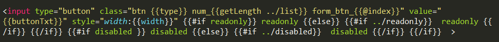
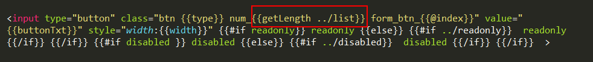
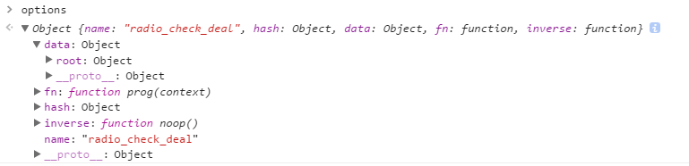

handlebars文档
目前常用的模板引擎（这里仅指浏览器端的，不包括node的）有很多种，有的已经有很多年了历史了……比如handlebars、artTemplate、Template.js、baiduTemplate、juicer、doT等等等等……目前不知道有没有已经废弃的 
作为一个模板引擎，最基本的功能就是用给定的数据渲染模板，生成最终的html结构，在这个功能的基础上，每个模板引擎分化出了不同的语法和用法，这里是handlebars的一篇常用知识点解说文档……
说明一下handlebars的使用方法
有三个步骤：
html文件中，引入handlebars模板的js文件准备用来数据渲染的
handlebars html模板js中，获取此模板并用数据渲染，再塞到页面上，基本有四句：var source = $('#contentList').html(); var template = Handlebars.compile(source); var html = template(data); $('.content_list').html(html);第一句，获取
$('#contentList').html()并赋值给source变量，此时source变量应该为一段使用handlebars方法写出来的html代码第二句，通过
Handlebars.compile()，将source的内容初始化为handlebars模板，此方法会返回一个函数，赋给了template变量第三句，通过
template方法，结合传递的参数数据data，handlebars会把data和模板source的内容结合起来，渲染出最终的html片段，赋给了html变量第四句，拿到渲染结果后，这里将
html放到了$('.content_list')中当然啦，以上四句也可以结合起来，成为
$('.content_list').html( Handlebars.compile( $('#contentList').html() )(data) );以上是完整的渲染
handlebars模板的逻辑，可以发现，在Handlebars.compile()之前，只要获取到作为模板的html片段即可，因此一段handlebars模板有两种创建方式放在html文件中，用
<script>标签包含起来此时需要给
<script>标签设置属性type="text/x-handlebars-template"和id=****，id属性也可以改成class，总之是可以用js获取节点使用的，在js中获取的时候，需要用$(***).html()的方式，如
放在单独的html文件里，此时不要用
<script>标签包含，如
需要在用到该模板的
js文件中作为html片段引入，如var errHtml = require( 'html-loader!../../../error/views/handlebar_error.html');，在渲染模板时，直接使用errHtml变量
接下来是handlebars html模板的语法
handlebars作为模板引擎，可以使用各种类型的数据进行渲染，在写模板时，对于变量，循环，if/else等，都有对应的使用方法，这些基本语法可以参考网上的handlebars教程，这里附一些链接~
handlebars官网：http://handlebarsjs.com/
教程一：https://www.cnblogs.com/iyangyuan/archive/2013/12/12/3471227.html
教程二：http://www.ghostchina.com/introducing-the-handlebars-js-templating-engine/
下面主要说明handlebars的helper和其他一些概念
{{}}和{{{}}}和{{> }}
如果要使用变量的话，要在变量外面用{{}}括起来，这样handlebars在解析模板时，会把它作为变量解析，此时如果变量内容包含了
html节点，只会作为字符串渲染出来，不会作为html节点存在如果变量是用{{{}}}括起来的，如果变量内容包含了
html节点，才会作为html节点存在，因此如果数据中含有html节点，记得用{{{}}}{{> }}用来在模板里调用
partial，partial的作用会在下面说明~
块的概念，和../
handlebars有块级的概念，在模板里，每个#就表示当前是一个局部块，每个块都有自身的作用域范围
看到../的时候，很容易想到“路径”，就像js或less文件在引入其他文件时写路径的方式一样，handlebars也支持这种方式，用来寻找数据，比如：
当一组数据是这个样子的：
var list = {
name: 'abc',
content:[{
type: 1,
length: 2
},{
type: 2,
length: 3
}]
}
在循环content数组时，通常会使用#each或是#block（block表示当前块，也就是需要处理的数据的名字，在这里就可以是#content）的方式，此时在当前作用域里，是找不到与content同级的name的，那么要使用name怎么办呢？使用../
一个../表示跳出一层，与文件路径的寻找是一样的，两个../就表示跳出两层，可以叠加
helper和partial
因为handlebars的html模板的语法不太全面，有很多功能无法实现，所以出现了helper和partial这种东西，相当于在js中给handlebars添加了一个新的可公用的方法，在html模板里按照正确的使用方法书写，handlebars在渲染模板时就会自动调用这些方法，生成正确的模板
先说一下
helper：if、each、unless、with等是handlebarrs内置（自带）的helper，除了这些之外，还可以自定义helper，声明一个helper的方法是Handlebars.registerHelper()，如：Handlebars.registerHelper('getLength', function(options) { return options.length; });这就是声明了一个名叫
getLength的helper，Handlebars.registerHelper()可以传参，第一个参数是helper的名字，第二个参数是一个function()，里面是getLength helper需要处理的逻辑，该函数可以传参还可以使用
this：Handlebars.registerHelper('getLength', function(options) { return options.fn(this); });这个
this是渲染当前作用域块的数据
在模板中给
helper传参时需要注意：调用一个
helper并传参的方法：{{helper的名字 传参}} ，如：
getLength就是上面声明的那个helper，后面的../list是给这个helper传递的参数，其中../是用来寻找上一级数据的，外部的大括号{}根据实际情况判断是用两个还是用三个这样写好之后，在模板渲染时，就会自动去寻找
getLength helper并传递参数../list，在getLength里处理好了之后，getLength里有一个return用来返回处理后的数据，把这个数据替换掉模板里红色框起来的部分~传参的参数类型不止一种
1. 传递一个字符串 getLength 'txt' 此时txt只是单纯的字符串 2. 传递一个数据 getLength ../list 此时list是渲染模板的数据中的某一项，getLength中可以直接使用此数据做处理 3. 传递一个带=的自定义数据 getLength class="red" 此时class="red"不是一个纯粹的字符串，也不是数据，getLength中也不是用参数接收它的，而是在hash()中，这个hash()下面部分在解析helper的参数时介绍~可以不传参数，也可以传一个参数，也可以多传
以上面的
getLength为例，有一个参数是options，用来接收外部传递的参数，但是外部在调用getLength的时候，可以不传，也可以传一个参数，也可以多传，如：1. 不传 getLength 2. 传一个参数 getLength ../list 3. 多传 getLength ../list name type 或者 getLength 'txt' 'str' 或者 getLength class="red" href="javascript:;" 4. 多种类型的参数结合起来传 getLength 'txt' name class="red" 此时第一个参数为字符串'txt'，第二个参数为数据name，第三个参数是一个带=的自定义数据 三种传参类型都可以有多个，字符串和数据类型的参数位置无要求，但注意自定义数据一定要写在所有数据的最后helper中接收参数的方式
不写任何接收参数
也就是说，上面声明
getLength时，不设置options：Handlebars.registerHelper('getLength', function() { return this.name; });此时没有任何接收参数，但function里可以使用
this有参数
这里要注意 ：
handlebars总会给第一个没有值的接收参数设置一个默认的数据，这个数据是一个对象，包含了很多东西~就比如第一次声明的
getLength中的options，此时只有一个接收参数，若外部没有传参，handlebars会给options设置这样一个默认值：
这个对象有五个属性：
data fn hash inverse name其中
data和name、hash是通常任何情况下都会有的，fn和inverse视情况出现，而fn和inverse不出现的时候，hash只是一个空对象，没有数据若是接收参数有多个，外部传的参数也有多个，如：
Handlebars.registerHelper('getLength', function(list, name, options) { return this.name; }); 如果模板里只传了一个参数，即只给
如果模板里只传了一个参数，即只给list赋值，那么name就是handlebars提供的默认数据 如果模板里传了两个参数，即只有
如果模板里传了两个参数，即只有options没有被赋值，那么就作为handlebars提供的默认数据但如果模板里在使用getLength时传了三个参数，可以与这里的
list, name, options一一对应起来，那么这个函数里就没有上面所说的handlebars提供的默认数据的存在了
在有
handlebars提供的默认数据时，这里暂时把它叫做options 先说明一下
先说明一下data和name:data：渲染模板的数据在这个
data里，有一个root，是渲染整个模板的所有数据，这个数据与this不一样，是整体的哦~不是只针对当前helper的，所以可以用options.data.root取得所有数据name: 当前helper的名字 接着说明一下hash:hash: 是一个对象，用键值对的方式保存模板中传过来的带=的自定义数据 最后，说明一下fn和inverse:fn: 一个方法，需要传参，如传的是this：即options.fn(this)时，返回使用this渲染之后的模板inverse: 也是一个方法，需要传参，作用跟fn一样，也是返回一个渲染数据后的模板，但是与fn不同的是，inverse是取反的。。。具体取反是什么效果，请自行试验 最最后，说明一下
最最后，说明一下fn和inverse不出现及hash无值的情况:当一个
helper被使用时，如果它是一个block块的方式被使用，也就是被{{#getLength}}这么使用时，options是有fn和inverse的，hash也是有数据的，而如果不这么使用，比如在模板中直接调用时，也就是{{getLength}}这样使用时，就没有fn和inverse了，hash也没有数据了
说一下
partial：声明一个
partial的方法：Handlebars.registerPartial()，如：Handlebars.registerPartial('userMessage', '<{{tagName}}>By {{author.firstName}} {{author.lastName}}</{{tagName}}>' + '<div class="body">{{body}}</div>');可以看出来，这个方法与声明
helper是不一样的，虽然也能接收两个参数，第一个参数是partial的名字，第二个参数却不是function()了，而是一段handlebars的html模板，这个函数不需要return返回什么东西，而是直接把结果替换掉模板里写着{{>userMessage}}的部分~而在模板里调用
partial的时候，需要用{{>partial名称}}的方式，多一个>哦
end~